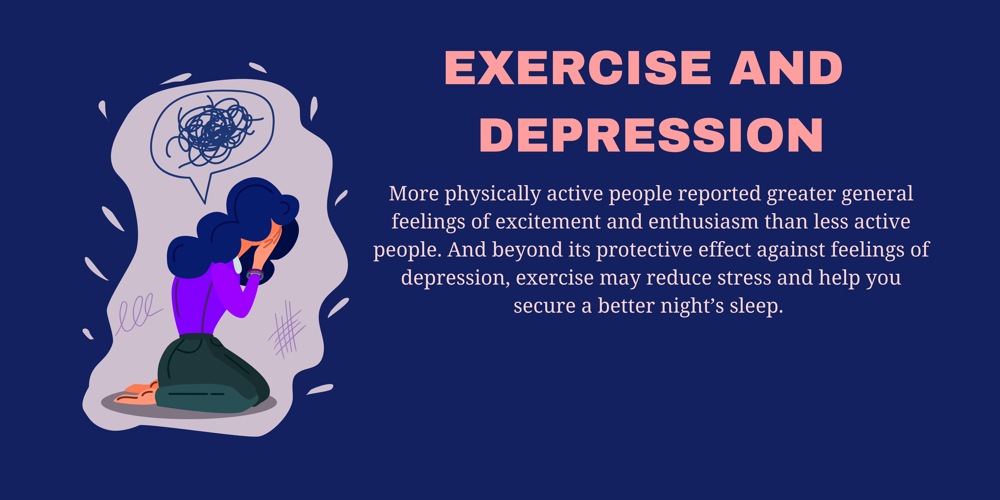

EXERCISE AND DEPRESSION
Researchers say that more physically active people reported greater general feelings of excitement and enthusiasm than less-active people. And beyond its protective effect against feelings of depression, exercise may reduce stress and help you secure a better night’s sleep. That’s why your favorite fitness routine can be an excellent addition to your depression treatment plan.
Set Off That Runner's High
When it comes to workouts that fight depression, aerobic and cardio exercises have the edge. “To date, the strongest evidence seems to support aerobic exercise”. While the correct "dose" of depression-fighting exercise is up for debate, some experts recommend 20 to 30 minutes most days of the week.
Ever heard of runner’s high? “The most tangible example of exercise stimulating certain brain chemicals is the runner’s high that many athletes report experiencing once crossing a certain threshold of exertion while running”. That euphoria is due to the release of endorphins in the brain in response to sustained physical activity.
“Endorphins are our body’s natural morphine and, when released by special glands in our brains, they can produce a sense of well-being or joy and also decrease pain levels.”
Build Your Muscles
“Strength training is about mastery and control”. “It requires full attention and concentration. More importantly, people can see the results, the outline of the muscles forming, from dedication and training.”
Just be sure to start slowly and use the assistance of a personal trainer if needed.
Bounce!
Want something super-simple to break you out of a funk — at least temporarily? Be bouncey. “You don’t need to jump, but bend your knees and bounce as quickly as you can for a few minutes”. “This is an easy way to oxygenate your brain and get some endorphins flowing.”